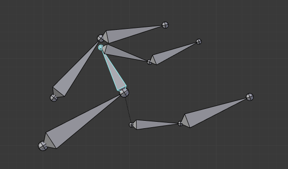
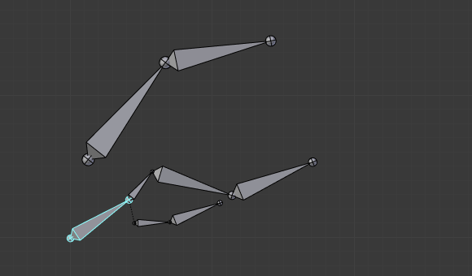

Відношення -- Relations¶
Орієнтир -- Reference
| Mode: | All Modes |
|---|---|
| Panel: |

Панель «Відношення» -- The Relations.
У цій панелі ви можете впорядковувати набори костей по різних шарах для легшого ними маніпулювання.
Шари Кісток -- Bone Layers¶
Moving Bones between Layers¶
Очевидно, ви повинні знаходитися у Режимі Правки -- Edit Mode або Режим Пози -- Pose Mode для переміщення кісток між шарами. Зауважте, що як і об'єкти, кістки можуть лежати на різних шарах одночасно, для цього як і звичайно використовується Shift-LMB... Перш за все, ви маєте виділити обрані кістку(ки)!
- У Редакторі Властивостей -- Properties Editor використайте «кнопки шарів» на панелі «Відношення» -- Relations (вкладка «Кістка» -- Bone) для визначення для кожної кістки, до якого шару(ів) вона належатиме.
- У редакторі 3D Огляду -- 3D View скористайтеся командами «Арматура > Змінити Шари Кісток» -- (Change Bone Layers) чи «Поза > Змінити Шари Кісток» -- (Change Bone Layers) або натисніть M для зміни шарів в однойменному спливному меню з кнопками шарів. Зауважте, що таким чином ви призначаєте однакові шари для усіх поточно виділених кісток.
Група Кісток -- Bone Group¶
Орієнтир -- Reference
| Mode: | Pose Mode |
|---|

The Bone Group data ID.
To assign a selected bone to a given bone group use the Bone Group data ID.
Нащадки Об'єкта -- Object Children¶
Орієнтир -- Reference
| Mode: | Pose Mode |
|---|
- Відносне Приріднення -- Relative Parenting
- ToDo 2.66.
Приріднення -- Parenting¶
- Приріднення -- Parent
- Блок Ідентифікатор даних --- Data ID для вибору кістки, що буде задана як предок для цієї виділеної кістки.
- З'єднано -- Connected
- Стяг Connected установлює, що голова цієї кістки буде з'єднана з коренем її предка.
Трансформування¶
Відношення кісток мають вплив на поведінку трансформувань.
Стандартно, нащадкові кістки успадковують:
- Позицію їх предка, звичайно, з їх власним зсувом.
- Оберт їх предка (тобто, вони зберігають постійне обертання відносно їх предка).
- Масштаб їх предка, тут знову, з їх власним зсувом.

Арматура в її позиції спокою. |

Обертання кореневої кістки. |

Масштабування кореневої кістки. |
Так само, як і стандартні нащадкові об'єкти. Ви можете модифікувати цю поведінку для кожної кістки, використовуючи панель Relations у вкладці Bone:
Панель «Відношення» -- Relations у Режимі Пози -- Pose Mode.
- Спадкувати Оберт -- Inherit Rotation
- При вимкненні, це буде «розривати» відношення обертання з предком кістки. Це означає, що нащадок буде зберігати своє обертання відносно простору об'єкта арматури при обертанні його предка.
- Спадкувати Масштаб -- Inherit Scale
- При вимкненні, це буде «розривати» відношення масштабування з предком кістки.
Така поведінка спадкування поширюється по ієрархії кісток. А тому, коли ви зменшуєте масштаб кістки, то усі її нащадки стандартно отримають зменшений масштаб, відповідно. Однак, якщо ви якщо ви увімкнете для однієї з кісток властивість Inherit Scale або Inherit Rotation у цьому «сімействі», то це розірве поширення масштабування, тобто ця кістка та усі її нащадки більше не підпадатимуть під вплив, коли ви масштабуватимете їх предків.

Оконтурена жовтим кістка в арматурі має вимкнену для неї опцію Inherit Rotation. |

Обертання кістки з вимкненою Inherit Rotation, що поширюється на її нащадків. |

Масштабування кістки з вимкненою Inherit Scale, що поширюється на її нащадків. |
{kind=link}
{kind=link}
З'єднані кістки мають іншу специфіку: вони не можуть бути пересунуті. Справді, оскільки їх корінь повинен знаходитися на верхівці їх предка, то поки ви не пересуваєте предка, ви не зможете перемістити корінь нащадка, а можете рухати тільки верхівку останнього, що призводить до обертання нащадка. Це ж саме трапиться, коли ви натиснете G при виділеній з'єднаній кістці і Blender автоматично перемкнеться у режим операції обертання.
Відношення кісток також мають важливі наслідки на те, як виділення кількох одночасно кісток поводить себе при трансформуванні. Існує багато різних ситуацій, які можуть не бути включеними у цей список, проте, слід дати добру ідею щодо цієї проблеми:
- Не-співвідносні виділені кістки трансформуються незалежно, як звичайно.

Масштабування кісток, деякі з них співвідносні.
- Коли кілька кісток одного і того ж «сімейства» виділені, то реально трансформується тільки «найвищий предок» -- нащадки просто обробляються через процес відношення приріднення, ніби вони не були виділені (дивіться Ілюстрацію Масштабування кісток, деякі з них співвідносні. третя у ланцюгу верхівкова кістка, оконтурена жовтим, була зменшено масштабована тільки через відношення приріднення, точно так, як і інші невиділені кістки, хоча навіть вона виділена та активна. В іншому випадку, вона б стала удвічі меншою!).
- Коли виділені з'єднані та нез'єднані кістки і ви починаєте операцію пересуву, то вона задіє тільки нез'єднані кістки.
- Коли виділено нащадкову з'єднану кістку, і «найвищий предок» з'єднаний з нею, то при натисканні вами G нічого не трапиться, оскільки Blender залишиться в режимі операції пересуву, яка, звичайно, не має впливу на з'єднану кістку.
Тому, при позуванні ланца кісток ви повинні завжди редагувати його елементи з кореневої кістки до верхівкової кістки. Цей процес відомий як «форвардна кінематика» -- forward kinematics (FK). Ми побачимо пізніше -- later page, що Blender має інший метод позування, що зветься «інверсна кінематика» -- inverse kinematics (IK), який дозволяє вам позувати цілий ланцюг, просто рухаючи його верхівку.
Ghi chú
Ця функція дещо розширяється/доповняється засобом «бібліотека поз» -- pose library.